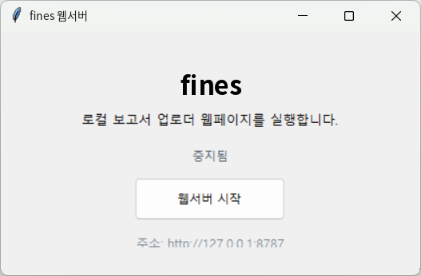
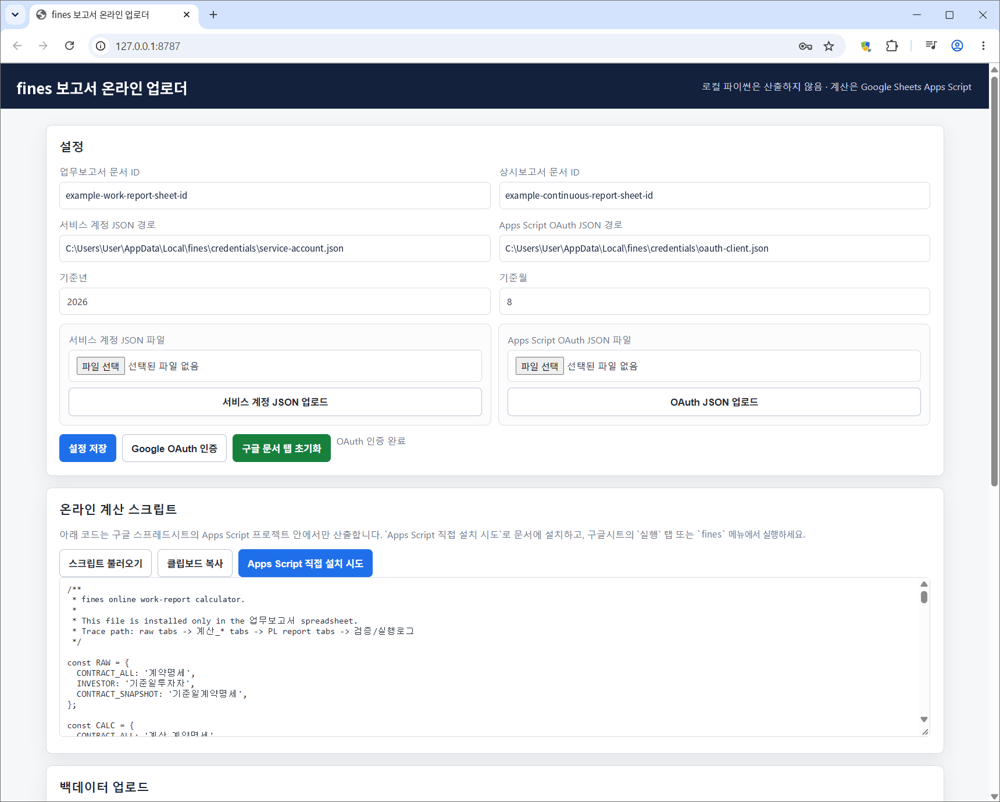
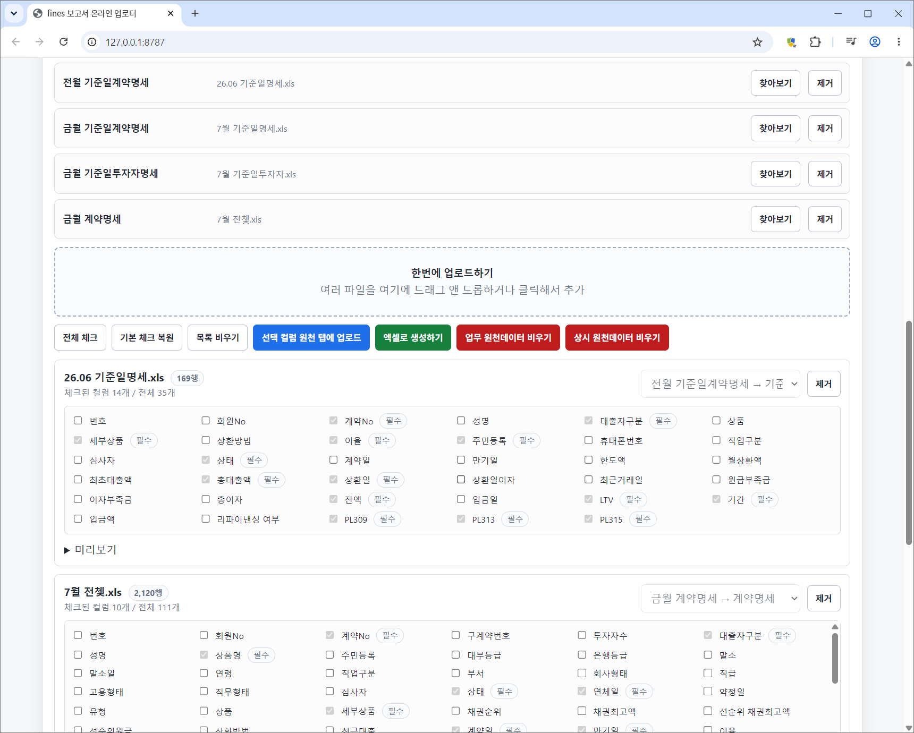
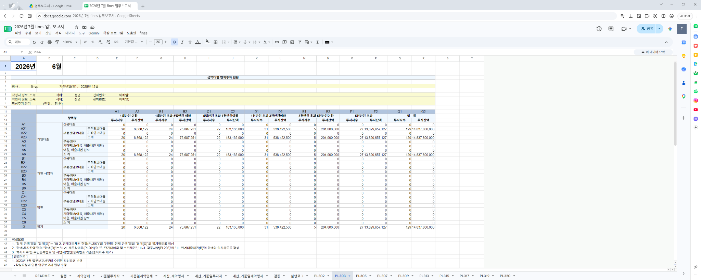
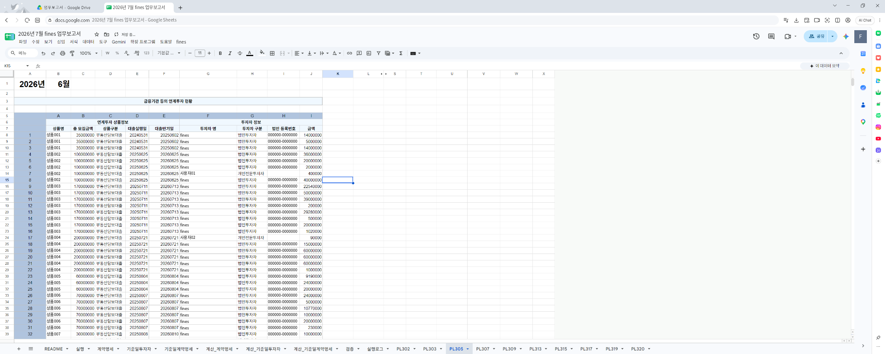

DOCUMENT & FILE AUTOMATION / FINES
fines금감원 보고서 자동 작성기
DB에서 내보낸 Excel을 Google Sheets에 적재하고,
Apps Script로 업무보고서와 상시감시보고서를 산출합니다.
검사·적재·집계 순서로 처리합니다.
파일에서 필요한 컬럼을 고르고, 기준월을 확인한 뒤 보고서용 문서에 반영합니다.
Excel 입력
DB에서 내보낸 계약·투자자 원천자료를 넣습니다.
컬럼·기준월 검사
필수 컬럼과 같은 월의 파일 중복을 확인합니다.
Sheets 적재
선택한 컬럼을 보고서별 원천 탭에 올립니다.
재계산 실행
사용자가 Google Sheets에서 보고서 재계산을 실행합니다.
보고서 산출
Apps Script가 집계하고 보고서·검증표·실행로그를 갱신합니다.
Windows에서 실행하고, 브라우저에서 입력합니다.
런처에서 로컬 서버를 시작하면 입력 화면이 열립니다. 파일 처리는 Python, 온라인 보고서 계산은 Apps Script가 맡습니다.
- 언어·화면
- Python · Flask · HTML · CSS · JavaScript
- 파일 처리
- pandas · openpyxl · xlrd
- 자료 적재
- Google Sheets API · 서비스 계정 인증
- 온라인 계산
- Google Apps Script · JavaScript
- 스크립트 설치
- Google OAuth 2.0 · Apps Script API
- Windows 배포
- Tkinter 런처 · PyInstaller


Google 문서 연결과 스크립트 설치를 구성했습니다.
서비스 계정으로 Sheets에 접근합니다. Google OAuth 인증 후 Apps Script API로 업무보고서·상시감시보고서 문서에 각각 계산 코드를 설치합니다.

파일별 컬럼과 기준월을 확인합니다.
계약·투자자 자료의 헤더와 파일 유형을 읽고 필요한 컬럼을 선택합니다. 기준월과 필수 컬럼을 검사한 뒤 원천 탭에 적재합니다.

집계 결과와 계산 근거를 함께 남깁니다.
시트에서 재계산을 실행하면 계약번호로 자료를 연결하고 투자자·상품 분류를 정리합니다. 보고서 항목별로 집계한 뒤 원천 행 수와 잔액 합계를 검증표에 기록합니다.
공개 화면의 회사명과 개인·문서 식별정보는 예시로 치환했습니다.




원천자료·중간 계산·보고서 탭을 나눠 수치의 출처를 확인할 수 있게 구성했습니다. 실행로그에는 계산 시작·종료 시각, 기준월과 자료 건수를 남깁니다.